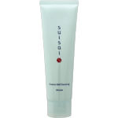
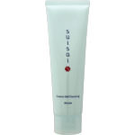

商品の特徴
うるおいを守りながら 毛穴やキメに入り込んだメイクも やさしく浮き上がらせて落とし つるつるすべすべ肌に洗い上げる クリーミィジェルクレンジング
- 成分・分量
- 水、ＤＰＧ、グリセリン、水添ポリデセン、イソノナン酸イソノニル、エタノール、ＰＥＧ-４０水添ヒマシ油、メチルトリメチコン、ジメチコン、トリイソステアリン酸ＰＥＧ-２０グリセリル、（アクリレーツ／アクリル酸アルキル（Ｃ１０-３０））クロスポリマー、水酸化Ｋ、カルボマー、キサンタンガム、ＥＤＴＡ-２Ｎａ、乳酸桿菌／セイヨウナシ果汁発酵液、ＢＧ、乳酸桿菌／豆乳発酵液、フェノキシエタノール
- 用法及び用量
- ○手のひらにとり、お顔全体にのばし、やさしくメイクとなじませます。
○汚れが浮き上がったら水またはぬるま湯で充分に洗い流してください。
○1回の使用量は直径約2.5cmが目安です。
 
